Chapter 7
Multiband passive radar for drones detection and localization
7.1 Introduction
For many surveillance systems, a multisensory architecture is essential when aiming at providing accurate and reliable surveillance of critical infrastructures and protected areas. This is certainly the case for airports, harbours, prisons and chemical facilities as well as for public places such as parking areas, train stations or stadiums, especially due to the new and emerging threat represented by commercial drones and unmanned aerial vehicles (UAVs) [1–3]. In particular, their small size, low radar reflectivity and flexibility of manoeuvre make them especially difficult to detect, localize and classify. The potentials of passive radar (PR) in counter drone operations, by exploiting different illuminators of opportunity (IOs), such as DVB-T, DAB, GSM, WiFi, GNSS (Global Navigation Satellite Systems) and DVB-S that were introduced in previous chapters, have been recently investigated in several works [4–18]. The reported results demonstrate that such sensors could be effectively employed for detecting and localizing small and medium drones up to a few kilometres from the PR receiver when DVB-T transmissions are exploited. However, in urban areas and highly populated environments, where the use of the non-invasive and green PR technology represents an attractive solution for enhancing the security level [19], it is important to consider the possibility to exploit a multisensory system by integrating PR with multiple operational frequency bands.
The integration of PRs operating at different frequency bands can be obtained using two approaches:
- A hardware integration can be conceived that provides a single multiband sensor, which exploits a common multichannel receiver, common data memory and common processing techniques for different signals of opportunity and therefore greater frequency bandwidth.
- At functional level, where each sensor operates with independent receiving structures but the outputs of the multiple sensors are combined to provide improved performance.
In the following sections, we proceed as follows. First, in Section 7.2, we briefly review the most attractive sources of opportunity for an anti-drone PR with their characteristics and signal processing requirements. Three specific sources of opportunity are identified that appear to be well suited for a multiband operation due to the complementarity of their characteristics. Therefore, we illustrate the concept of the multisensory system on the basis of the parasitic exploitation of such signals and discuss possible implementations and benefits. The different components of the multisensory system are then separately addressed in Sections 7.3–7.5 which are devoted respectively to anti-drone PR based on DVB-S satellite broadcast signals, DVB-T terrestrial TV and WiFi, in order to analyse the specific characteristics of their sensors as well as their performance. This analysis also allows to identify hardware and signal processing requirements for an effective implementation of the integrated multiband PR system.
7.2 Exploitation of different waveforms of opportunity
Different techniques have been proposed in the literature to detect and localize drones by exploiting PR systems based on different RF waveforms of opportunity [19–21]. Due to the small size of the target of interest and to the high variability of their motion characteristics, it is essential to have high range and Doppler frequency resolution. Thus, we only consider IOs with frequency bandwidth larger than 7–8 MHz and the possibility of providing long coherent integration times (CITs).
A wide frequency bandwidth is offered by satellite TV broadcast signal operating with the DVB-S standard. The bandwidth of a single DVB-S channel, typically of 32 MHz, allows a quite fine bistatic range resolution of about 5 m, which is much higher than other IOs. Since satellites transmitting DVB-S operate in the Ku-band (with wavelengths in the order of few centimetres), they potentially allow a good accuracy and a high-velocity resolution, which is easy to exploit due to the continuous wave (CW) characteristic of the broadcast signals. The widespread coverage of the TV broadcast makes them appealing as a ubiquitous source of opportunity. On the other hand, the main limitation is the target–satellite distance resulting in very low received signal-to-noise ratio (SNR) values, restricting its operation to short-range applications [16–18,22,23]. In practice, a coverage variable in the range of 40–200 m is reasonably available by exploiting the DVB-S source, when using antenna beams between 5 and 45 degrees. This makes it very valuable providing the accurate localization of drones, after their presence have been detected inside a potential surveillance area.
The GNSS waveforms can also be used with similar characteristics as the DVB-S broadcast illuminators, showing in some cases even a wider frequency bandwidth and a ubiquitous multistatic coverage [15]. However, GNSS are characterized by a similar low power level in proximity of the Earth surface and require the sensor to track the Medium Orbit satellite transmitters that imply higher hardware complexity and a continuously variable geometry, which, in turn, changes continuously range and velocity resolution, as well as detection and estimation performance. For this reason, we consider the exploitation of GNSS IOs only for a possible additional improvement.
Terrestrial broadcast TV can also be of interest, showing the same CW transmission characteristic of DVB-S signals, but with a narrower frequency bandwidth (7–8 MHz) and lower carrier frequency (VHF/UHF), which provides both lower resolution in range and lower sensitivity to the target velocity. In contrast, the received power level is typically higher, which is expected to provide operational capability at longer ranges [4–10,24–27]. Among its characteristics, the low-frequency operation is capable of providing the presence of resonance conditions with the structure of commercial drones that might cause significant increases of their radar cross section (RCS). Coverages of a few kilometres can be obtained by exploiting this source of opportunity, which appears especially useful to search for the presence of potential drones in an assigned surveillance area.
Slightly greater frequency bandwidth is provided by the transmitted waveforms for local area networking applications (WiFi, LTE, etc.) which have been proliferating at a rapid rate for both commercial and private uses. Unlike the case of the TV broadcast transmissions, these sources have low power level (being intended for local networking), a burst characteristic and their use of any specific frequency channel is subject to a multiple access protocols, so that the source location can change from burst to burst. Appropriate operation has been demonstrated in the short-range for the WiFi transmissions, which are widely accessible sources of opportunity [13,14,28–30], but not ubiquitous as the geostationary satellite sources of the DVB-S. The coverages achievable using these sources are somewhat wider than the DVB-S but largely lower than the DVB-T sources. Among their attractive features, it is noted that these sources can operate with small-sized and low-cost antenna systems that can also be deployed in the form of antenna arrays and exploited for improved angular operation both in azimuth and in elevation.
Table 7.1 summarizes the main characteristics of the different IOs considered for the multisensory system addressed in this chapter.
Table 7.1 Summary of the main characteristics and complementary aspects of the illuminators of opportunity considered for the multisensory system
| DVB-S | DVB-T | WiFi | |
|---|---|---|---|
| Coverage | Limited (few tens of metres) | Very good (several kilometres) | Reasonable (few hundreds of metres) |
| Resolution | Very good (range: 5 m, velocity: ∼0.1 m/s) | Reasonable (range: 20 m, velocity: ∼1 m/s) | Good (range: 9–14 m, velocity: ∼0.5 m/s) |
| Accuracy | Very good (Ku-band) | Limited (UHF band) | Good (S or C bands) |
| Availability/additional opportunities | Global coverage | Improved RCS for commercial drones | Potential for joint passive radar/passive source location |
The different coverage, range resolution, velocity resolution and angular accuracy suggest that three types of PR sensors, respectively, based on DVB-S, DVB-T and WiFi signals of opportunity, can nicely operate as parts of a multiband multisensory system, structured as a multi-tier network of PR.
The concept of the multisensory system is sketched in Figure 7.1. The DVB-T PR sensor, which has the widest coverage but the worse resolution in both range and velocity, can perform the task of detecting the potential presence of a drone in a wider area, so to alert the short-range PR sensors that cover the detected drone approximate location or to provide target cueing, in case their antenna system can be steered towards the area of interest. Typically, the WiFi-based PR can provide a good coverage, to follow the drone motion at short range, as well as to accurately measure its 3D position by exploiting its antenna system. However, the WiFi signal coverage is not complete everywhere, whereas the availability of DVB-S signals is quite flat over extremely wide areas; therefore (using a sufficiently dense network of receivers), the DVB-S PR can cover potentially all the region and provide increased range resolution. Once the detection is confirmed, both WiFi-based and DVB-S-based PR can be used to provide a localization with much more accuracy than the DVB-T radar alone. The separation of the search and tracking modes is even more effective, if the DVB-S- and WiFi-based PRs are designed to provide a steerable surveillance antenna system that can be really cued by the DVB-T PR towards the preliminarily detected target.
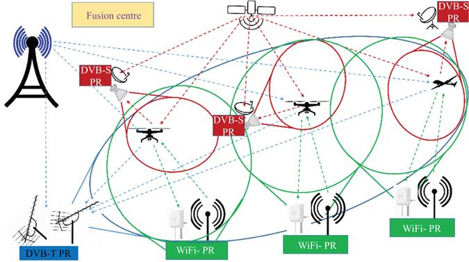
Figure 7.1 Multisensor system based on multiband passive radar components
Moreover, as illustrated in Section 7.3, the DVB-S PR provides a very good velocity accuracy, which can be exploited to implement a high-quality target tracker. In addition, we must mention that the high-velocity resolution can be used to study the drone-induced micro-Doppler that potentially allows the drone-type classification. As indicated in Figure 7.1, the fusion logic described earlier is implemented in the fusion centre, where the data processed by all PR sensors are transmitted (communication links not described to avoid a too busy sketch).
While not explicitly shown in Figure 7.1, we observe that a practical system is typically equipped with at least a couple of antennas for the estimation of the target direction of arrival (DoA). The two antennas for azimuth estimation are shown in Figure 7.2 (whereas a third one or more could be used to also estimate the drone’s elevation), where only the sensors focussing on a specific drone target are reported. Figure 7.2 also shows that the multiband PR system can nicely be integrated with a device-based passive coherent location sensor that receives the waveforms autonomously emitted by the target (purple dashed lines in the figure) to localize it. Device-based passive coherent location can provide target localization either by exploiting two angle measurements from two receivers or exploiting angle and a time difference of arrival (TDoA) measurements. This can be a quite effective integration, since many commercial drones exploit the ISM band of 2.4 GHz to transmit to the controller/operator both position information and images of video collected during its operation. Moreover, due to the large similarity in the frequency range of operation and in the processing techniques, this sensor can fully be integrated with the hardware of the WiFi-based PR. Adding this type of sensors can provide a global multiband system with largely improved accuracy and continuity of localization for the drone targets.
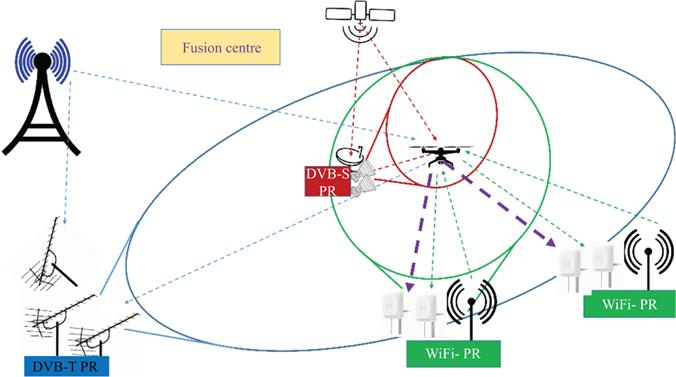
Figure 7.2 Multisensor system based on multiband passive radar components incremented with a device-based passive location system in the ISM frequency range used by the WiFi signals
While all the three types of PR, respectively, exploiting DVB-S, DVB-T and WiFi signals, can be built around a software-defined radio (SDR) receiver with three or four coherent channels, and they can potentially be integrated in a single multiband PR sensor, with quite different characteristics, the following considerations should carefully be considered at the design stage.
- Their antenna subsystems are significantly different.
- While SDRs are available to cover the frequency range, including DVB-T and WiFi frequency bands, to receive the satellite DVB-S signal, a first conversion must be implemented from Ku- to L-band keeping (or reconstructing by processing) phase coherence among channels.
- DVB-T and DVB-S, despite using both CW signals, require the mostly different hardware and have the mostly different coverage, whereas WiFi and DVB-S signals, which have the mostly similar coverage, operate with different hardware and with all differences between burst and CW transmission modes.
- Due to the different geometry in terms of transmitter, receiver and target location, other than the differences in the used antenna beams, the requirements for the signal processing chain are quite different among the three systems. This has a significant impact on the processing techniques for the acquisition of the reference signal and for the cancellation of the direct signal and its multipath.
In the following sections, we present the receiver hardware block diagrams and the relevant signal processing schemes that are required to cope with the individual characteristics listed earlier.
7.3 Passive radar based on DVB-S
Most of the current digital TV broadcast satellites exploit the DVB-S signal standard in the Ku frequency band from 10 to 12 GHz. The transmitted waveform at each carrier is a composite signal multiplexing multiple TV programs that are combined into an overall signal with 30-MHz bandwidth, which result in a range resolution of 5 m. This characteristic, together with a very high velocity sensitivity available due to its Ku-band operation, makes the DVB-S waveform extremely attractive [16–18,22,23]. However, the long distance to the source of opportunity implies a very low power density in proximity of the Earth surface, which tends to limit the capability to detect small targets. Moreover, the Ku-band operation and the wide signal bandwidth might have an impact on the sensor’s hardware cost and on the computational complexity of the required signal processing.
In this section, the previous limitations are addressed, and appropriate solutions are identified to enhance the potentials of DVB-S PR systems as one of the subsystems of the multisensor system and to make it cost-effective. Specifically, low-cost hardware implementations and low-complexity signal processing schemes are devised to recover the target energy by exploiting long CITs and polarization diversity.
7.3.1 DVB-S-based PR processing schemes
In the DVB-S case, the emitting source of opportunity is typically very far from the receiver location (order of thousands of kilometres) and very far from the Earth surface. Therefore, directive antennas are typically used since the receive signal level tends to be low. Consequently, the direct signal represents a very small component of the signal collected by the surveillance antennas and the corresponding receiving channels and its multipaths are negligible. This implies that
- a very simple direct signal/clutter cancellation technique can be used and often this can be even avoided without degradation of the overall performance;
- the reference waveform cannot be extracted from the surveillance channel samples, whereas a narrow beam reference antenna must be used, steered towards the satellite source of opportunity;
- a long CIT must be used to compensate for the very low signal levels backscattered from the drone, which requires to include advanced techniques to compensate for the target range and Doppler frequency migration.
The developed DVB-S-based PR processing scheme for target detection [17] is illustrated in Figure 7.3. First, the signals collected by means of the reference and surveillance antennas undergo a disturbance cancellation stage for the removal of the undesired contributions in the surveillance channels, i.e. direct signal, clutter and multipath echoes. For this purpose, we resort to the extensive cancellation algorithm (ECA) [20,21,31]. Then, the output signal from ECA filter and the reference signal are used to evaluate the bistatic range–Doppler cross ambiguity function (CAF).
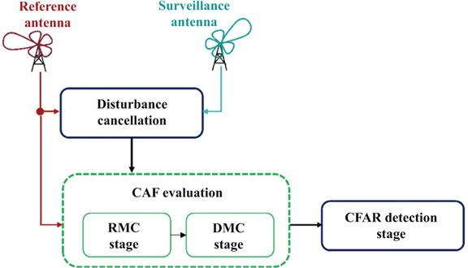
Figure 7.3 DVB-S-based processing scheme for target detection exploiting long coherent integration times. © 2020 IEEE. Reprinted, with permission, from Reference [17]
To increase the CIT, in order to benefit from the coherent integration gain, the target migration effects must be effectively compensated [17]. Consequently, for a moving target with both radial and tangential velocity components, the CAF evaluation should also include a range migration compensation (RMC) and a Doppler migration compensation (DMC) stage. For the RMC stage, we use the keystone transform (KT) based on the implementation presented in [32]. We recall that the KT technique is widely used in active radar to compensate for the range migration. It can be applied to PR systems employing CW transmissions by resorting to a batch approach [20], in order to recreate the classical slow-time/fast-time framework of a pulsed radar operating at a given pulse repetition frequency. We also recall that the use of the suboptimal batch approach yields some SNR loss with respect to the use of an optimum algorithm for the CAF evaluation.
Following the RMC stage, the Doppler migration is corrected at each range cell r, operating on the range-migration-compensated data in the slow-time domain,
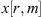
[17,33]. For a given Doppler rate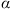
, the required correction is obtained by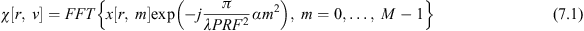
Since the target Doppler rate is unknown at the detection stage, a bank of filters is exploited for an appropriate set of Doppler rate values. A grid of
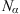
Doppler rate values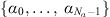
, spaced by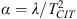
(where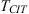
is employed CIT), according to the depth of focus criterion. The 2D outputs from (7.1) obtained for different values of α are collected in a 3D array χ[r, v, n], r = 0,…, NR − 1, d = 0,…,ND − 1, n = 0,…Nα − 1, where N푅 and ND are the array extensions in the bistatic range and Doppler dimension, respectively. Subsequently, a 2D map is built starting from the 3D array χ[r, v, n] by maximizing its intensity across the Doppler rate dimension, separately at each range–Doppler bin: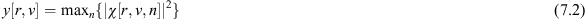
Afterwards, a 2D Cell Average–Constant False Alarm Rate (CA-CFAR) scheme is applied to detect potential targets. Notice that due to the previous non-linear operations, the CFAR threshold cannot easily be evaluated in closed form. Therefore, in this work, the threshold to be used in the detection scheme, in order to obtain the desired probability of false Alarm (Pfa) value, has been evaluated via Monte Carlo simulation.
7.3.2 Experimental drone detection and localization with DVB-S-based PR
An experimental DVB-S PR has been set up, based on COTS, and fielded in different acquisition campaigns to test its effectiveness for infrastructure protection and specifically when operating against drones. To obtain a clean reference signal, a high gain, offset parabolic reflector antenna is used for the reference channel, with a feedhorn installed in the reflector focus as illustrated in Figure 7.4(a). A low-noise block (LNB) is connected to the feed in order to provide the first low-noise amplification of the received signal and its downconversion from Ku- to L-band. Low-cost LNBs are available for satellite TV reception that can be used to receive either in horizontal or in vertical polarization. As the parabolic reflector antenna has a very narrow beam, only the feedhorn was used as antenna for the surveillance channels in order to continuously monitor a reasonably large area. As shown in Figure 7.4(b), an OMT (orthomode transducer) was connected at the feedhorn output in order to simultaneously collect both the polarizations on receive for the purpose addressed in Section 7.3.4. All LNBs employed are provided with the same reference of 10-MHz signal, so that coherent downconversions are performed at surveillance and reference channels (Figure 7.4(b)). Following the work in [18], a four-channel SDR board is used to downconvert the signals from the reference channel and up to three surveillance channels and to digitize all of them. In Figure 7.4(b), we also show the presence of the diplexers COTS, which allow to properly distribute the 10-MHz reference, the energy source for the LNBs and the L-band outputs.
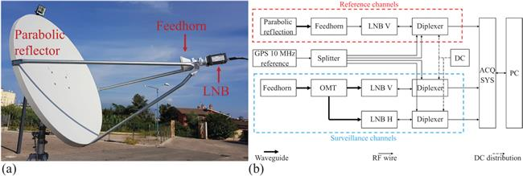
Figure 7.4 (a) Offset parabolic reflector and (b) DVB-S passive receiver architecture. © 2020 IEEE. Reprinted, with permission, from Reference [17]
A DJI Mavic Pro drone of size approximately 20-cm long and 8.3-cm wide (propellers excluded) was used as a cooperative target to test the experimental receiver and evaluate the performance of the proposed signal processing scheme. The drone, which is characterized by a complex motion model, was piloted to fly away from the receiver up to approximately 25 m, and the digitized data files were processed according to the scheme in Figure 7.3. The coherent integration gains were evaluated when different CAF algorithms and CIT values were used. Specifically, for the considered analysis, the CIT has been extended up to 3 s. First, the conventional CAF (namely no compensation case) is evaluated by resorting to the direct FFT algorithm [20] which is the most efficient solution for the CAF formation when DVB-S signals are exploited. Then, we considered the case of a CAF evaluation where the RMC stage alone has been added and finally, the CAF evaluation where both RMC and DM walk effects have been corrected. As an example, Figure 7.5 shows a zoom of the range–velocity maps obtained using the V polarization for a single data file around the drone location [32 m, 1.6 m/s].
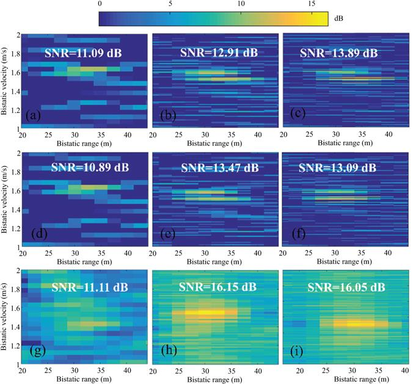
Figure 7.5 Comparison of detection maps to CIT and the cell migration compensation technique. Drone-case: zoom of the range–velocity maps using V polarization at a single scan with different algorithms: (a)–(c) conventional CAF with CIT = 0.5, 2 and 3 s, respectively; (d)–(f) RMC with CIT = 0.5, 2 and 3 s, respectively; (g)–(i) RMC+DMC with CIT = 0.5, 2 and 3 s, respectively. © 2020 IEEE. Reprinted, with permission, from Reference [17]
All the maps have been normalized to the noise power (estimated in a region of the CAF where it is unlikely for targets to be present) in order to measure the target’s SNRs. It is worth noting that in the DVB-S case, when close range targets are considered (this is the case), the bistatic range is comparable with the receiver-to-target distance since the transmitter-to-target distance is approximately equal to the baseline [17].
When the conventional CAF map is evaluated with a CIT = 0.5 s (see Figure 7.5(a), (d) and (g)), the drone is received with low SNR value (approximately 11 dB) and it is likely to not exceed the threshold stage for typical Pfa values. When we extend the CIT up to 2 and 3 s and the conventional CAF is adopted, the SNR improvement is limited due to the target migration effects that become apparent, especially in the Doppler dimension (Figure 7.5(b) and (c)). From Figure 7.5(e) and (f), we observe that the compensation of range migration alone yields a negligible advantage on the target peak. In contrast, using the additional DMC stage (Figure 7.5(h) and (i)), the drone peak appears well focused and a significant SNR improvement is obtained with respect to the conventional CAF.
However, the comparison between parts (h) and (i) of Figure 7.5 shows that the extension of the CIT duration from 2 up to 3 s yields no integration gain. This might be caused by additional migration effects due to higher order terms that appear both in the range and Doppler variation laws. Despite this, the reported results clearly demonstrate that the proposed solutions allow extending the CIT at least up to 2 s against drones, even though characterized by an unpredictable motion model.
Moreover, from Figure 7.5 we clearly observe that a very high velocity resolution is available with the long CIT, which allows to obtain detailed characteristics on the target properties and potentially opens the way for a micro-Doppler analysis.
7.3.3 Phase-locked vs non-phase-locked receiver architectures
An effective operation has been obtained by means of the DVB-S PR sensor based on the coherent receiver architecture in Figure 7.4(b) [34]. To obtain a fully coherent scheme, high-quality LNB devices must be employed that can use the same external LO or at least the same 10-MHz reference signal. We refer to this architecture as the phase-locked architecture. In contrast, the use of commercial, non-phase-locked LNB could allow lower cost sensors to be utilized. Due to the Ku-band frequency allocation of the satellite signals, the phase noise of the LO is expected to be more critical than for other PR sources. To investigate this point, we considered a non-coherent reception scheme where the LNBs use independent LOs to obtain the conversion from K-band to L-band, while a four-channel SDR provides the baseband digitized signals. This scheme requires an appropriate processing module to recover phase/frequency synchronization among receiving channels.
For a direct comparison of the two different architectures, we implemented an experimental setup that allowed simultaneous tests against exactly the same input signals (see Figure 7.6). Specifically, a two-way balanced RF waveguide splitter was directly connected to the reference and surveillance antennas as illustrated in Figure 7.6(a) so that the same signals are made available at the input of the two receiver architectures. Figure 7.6(b) shows the reflector parabola, with the feedhorn and waveguide splitter feeding both LNBs used for the reference channels.
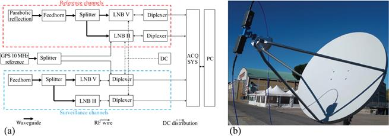
Figure 7.6 (a) Simultaneous coherent and non-coherent architecture and (b) Parabolic reflector with the feedhorn and waveguide splitter feeding both LNBs used for the reference channels. © 2021 IEEE. Reprinted, with permission, from References [17,34]
In Figure 7.6(a), the same components are adopted as in Figure 7.4(b) but connected in a different way. The phase-locked architecture exploits the reference and surveillance signals at the output of the LNBs disciplined by the 10-MHz LO reference. In contrast, the non-phase-locked architecture takes as inputs the signals from the LNBs operating independently by using their own reference.
To compare the performance of these two architectures, an experiment was carried out in which a car moved away from the radar while the four L-band signals were acquired. As previously mentioned, the four signals were arranged in two sets: one set of reference and surveillance in phase-locked setting and another set of reference and surveillance in non-phase-locked setting. The peculiar bistatic geometry obtained by exploiting the geostationary illuminator makes the cancellation stage not necessary. This allowed the use of simple offline processing, including only the preliminary filter stage, the calculation of the CAF and then a CA-CFAR detector applied to consecutive time windows of  seconds for each of the time frames. While this can be applied directly to the signals collected with the coherent or phase-locked architecture, the non-coherent or non-phase-locked acquisition scheme requires the preliminary estimation of the frequency offset between the two downconverted signals at the reference and surveillance antennas. To recover the coherency between the two channels in the non-coherent architecture, we could assume that, over short time periods, the use of different reference oscillators only yields a frequency offset
seconds for each of the time frames. While this can be applied directly to the signals collected with the coherent or phase-locked architecture, the non-coherent or non-phase-locked acquisition scheme requires the preliminary estimation of the frequency offset between the two downconverted signals at the reference and surveillance antennas. To recover the coherency between the two channels in the non-coherent architecture, we could assume that, over short time periods, the use of different reference oscillators only yields a frequency offset  . This would indicate that after applying conventional PR techniques, we would obtain Doppler–range maps shifted in frequency by an amount equal to
. This would indicate that after applying conventional PR techniques, we would obtain Doppler–range maps shifted in frequency by an amount equal to
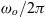
, which is a negligible loss in terms of coherent integration. The time periods that guarantee the validity of the approximation earlier are largely dependent on the stability of the employed oscillators. In this regard, it is interesting to understand the practical bounds on the CIT set by the approximation earlier when commercial LNBs are employed. Moreover, despite the fact that the frequency offset does not affect the coherent integration gain, it might jeopardize the estimation of the target speed. In principle, this frequency offset can be estimated on the basis of the received signals themselves, if we assume that they include the dominant contribution (e.g. the direct signal coming from the transmitter of opportunity). This is possible using a matched filter or CAF function [12,14] assessed at zero range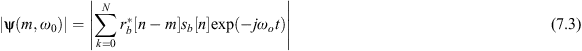
and find which offset frequency maximizes it. The lengths of the discrete signals
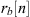
and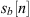
are represented by N. This procedure for the estimation of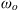
has been exploited to correct the Doppler–range maps.Figure 7.7(a) and (b) shows the raw detections obtained with the phase-locked and non-phase-locked architectures, respectively, for the considered experimental test. Specifically, in each figure the outputs of the detection stage are shown for consecutive partially overlapped signal frames of
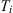
= 0.5 s each, displaced by 0.3 s. As can be seen, with both architectures it was possible to obtain a clean detection map, at least for a short-range application. This suggests a way to use the low-cost, non-phase-locked architectures for short-range applications. To understand the limits of the non-coherent architecture, Figure 7.8 shows the increase of direct signal to noise,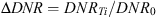
, with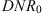
the DNR for an integration initial time, as a function of the integration time for both architectures. The use of DNR to perform this study is highly useful as we can consider the direct signal as a target in range and zero Doppler, which will not present cell migrations thus enabling an increased integration time when necessary until the effects of the lack of gain for the non-phase-locked system become evident. It is seen that after 1 s of integration in the non-phase-locked architecture there is no integration gain, at least in the analysed data set. This analysis directly links the lack of integration gain to the strict hypothesis that the phase error for non-phase-locked architecture may be considered linear. Therefore, the non-coherent scheme is usable for small integration times [34].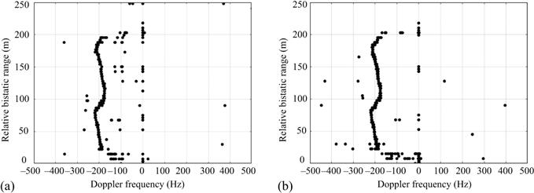
Figure 7.7 Detection maps with a
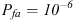
for (a) phase-locked and (b) non-phase-locked architectures. © 2021 IEEE. Reprinted, with permission, from Reference [34]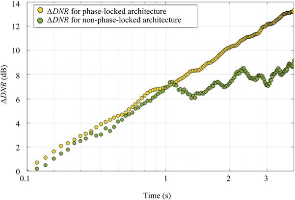
Figure 7.8 ∆DNR for phase-locked and non-phase-locked architectures. © 2021 IEEE. Reprinted, with permission, from Reference [34]
7.3.4 Exploiting polarizations for drone detection
As previously mentioned, to exploit both H and V polarizations, we use an OMT that allows to receive simultaneously the outputs at both polarizations from the same antenna, using a feedhorn with circular flange (as the C-120) and two LNBs (see Figure 7.9(a)). We consider the general case of a coherent DVB-S-based PR receiver, equipped with P differently polarized surveillance channels. First, the available surveillance signals are separately processed according to the main stages of a conventional PR processing scheme, sketched in Figure 7.9(b) [16]. Afterwards, the P outputs can be jointly exploited for target detection purposes.
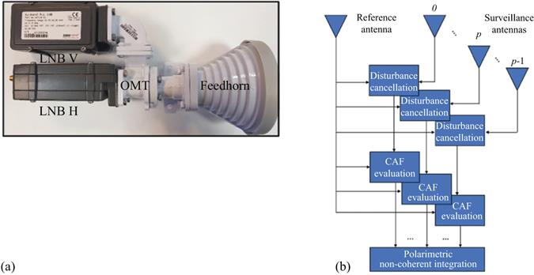
Figure 7.9 Feedhorn with (a) OMT and LNBs for H and V polarization, (b) polarimetric passive radar processing scheme. © 2020 IEEE. Reprinted, with permission, from Reference [16]
Specifically, after disturbance cancellation, we use frames of length
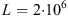
samples. The P outputs of this disturbance cancellation stage are then used to evaluate the CAF to obtain one bistatic range–Doppler map for each polarimetric channel, say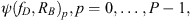
where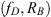
represent the generic Doppler and range pair. A DJI Mavic Pro has been used as cooperative target, flying away from the receiver up to approximately 25 m.Two different data files are considered in the following, data file 1 and data file 2, which account for two different signal fragments of 0.5 s each. The corresponding results are reported in Figures 7.10 and 7.11, respectively. Each sub-figure represents the test statistic over the bistatic range–Doppler plane before the detection stage, mapped into the nominal  that would allow the corresponding threshold exceeding. In other words, each pixel has been scaled to represent the minimum value of nominal
that would allow the corresponding threshold exceeding. In other words, each pixel has been scaled to represent the minimum value of nominal  to be set for that pixel to yield a detection.
to be set for that pixel to yield a detection.
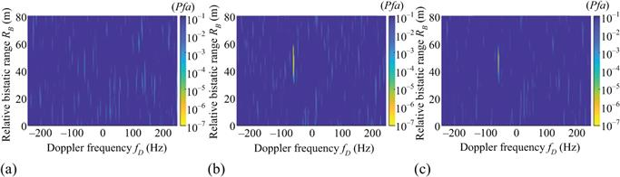
Figure 7.10 Results against drone for data file 1: minimum nominal  values in the range–Doppler domain to be set in order to detect each bin, using (a) single-pol H, (b) single-pol V and (c) polarimetric NCI. The
values in the range–Doppler domain to be set in order to detect each bin, using (a) single-pol H, (b) single-pol V and (c) polarimetric NCI. The  values range from
values range from  to
to
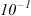
. © 2020 IEEE. Reprinted, with permission, from Reference [16]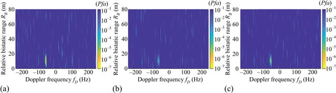
Figure 7.11 Results against drone for data file 2: minimum nominal  values in the range–Doppler domain to be set in order to detect each bin, using (a) single-pol H, (b) single-pol V and (c) polarimetric NCI. The
values in the range–Doppler domain to be set in order to detect each bin, using (a) single-pol H, (b) single-pol V and (c) polarimetric NCI. The  values range from
values range from
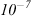
toSpecifically, Figure 7.10(a) and (b) is obtained for data file 1 when separately using the signals collected at vertical (V) and horizontal (H) polarization outputs, respectively. Similarly, Figure 7.11(a) and (b) shows the single-pol maps obtained at data file 2, corresponding to a different time window of the same size. The difference in the plots depends on the complex structure of the target and its motion/rotation and the signal polarization reflection that may vary in time (see also [15,16]). In fact, data files 1 and 2 show quite different behaviours, which makes the a priori selection quite hard. Notice that the available data set does not even allow to identify the polarimetric channel showing the best performance on average. Therefore, to improve robustness in detection, a simple non-coherent integration (NCI) of the signals processed at the two channels, i.e. P = 2 (H and V), can be used:
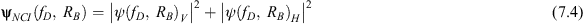
Figures 7.10(c) and 7.11(c) show
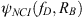
, respectively, for data files 1 and 2. It is not difficult to observe that the NCI approach provides stable results, always close to the best single-polarized channel.Finally, Figure 7.12 shows the raw detections obtained for 40 consecutive data files as grey plots in a common bistatic range–Doppler plane, for
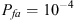
. The different grey shades map the time window at which the detections are extracted across the acquisition time, starting from the darkest one. In particular, Figure 7.12(a) and (b) shows the results obtained using the H and V polarization, respectively, while Figure 7.12(c) shows the results obtained using the polarimetric NCI approach.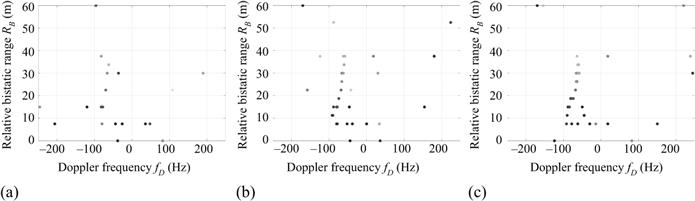
Figure 7.12 Results against drone: raw detections for 40 consecutive data windows with
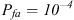
, using (a) single-pol H, (b) single-pol V and (c) polarimetric NCI. Different grey shades map the temporal information, starting from the darkest one. © 2020 IEEE. Reprinted, with permission, from Reference [16]Figure 7.12 shows that using the polarimetric NCI, the drone detection obtains a higher continuity for its entire trajectory. Table 7.2 shows a comparison in terms of number of detections associated to the drone when the three CAF algorithms and different CIT durations are considered.
Table 7.2 Synthesis of the drone detection results when different algorithms and CIT values are adopted for CAF evaluation. © 2020 IEEE. Reprinted, with permission, from Reference [17]
| Conv. CAF | RMC | RMC+DMC | ||||
|---|---|---|---|---|---|---|
| H | V | H | V | H | V | |
| CIT = 0.5 s | 11 | 23 | 11 | 21 | 11 | 23 |
| CIT = 1 s | 14 | 26 | 16 | 25 | 21 | 30 |
| CIT = 1.5 s | 17 | 28 | 20 | 28 | 25 | 34 |
| CIT = 2 s | 16 | 28 | 17 | 26 | 25 | 34 |
| CIT = 2.5 s | 14 | 28 | 16 | 29 | 26 | 38 |
| CIT = 3 s | 15 | 29 | 19 | 30 | 26 | 36 |
The following observations are made [17]:
- When CIT = 0.5 s, the conventional CAF, the only RMC stage and both RMC and DMC provide comparable detection results, since no range and Doppler migration effects show up during short coherent CITs.
- For longer CITs, the target echo smears both on multiple Range cells and on multiple Doppler cells and only few additional detections are obtained, unless both RMC and DMC stages are applied. Due to the low drone velocity, the range walk is small and using only the RMC does not show a sensible improvement.
- Using both RMC and DMC stages, the capability of detecting increases with the CIT duration until CIT = 2.5 s that provides 26 and 38 drone detections (out of 40) when using H and V polarization, respectively. These values are highlighted in red in Table 7.2.
- A further increase of the integration time up to 3 s yields a slight degradation of the detection performance in V polarization, possibly caused by higher order terms that appear both in the range and Doppler variations.
As can be seen the joint exploitation of long CITs and target migration compensation techniques determines a significant improvement in drone detection capability for the considered system, especially when combined with the use of the polarimetric information (either by selecting the best polarimetric channel or by providing a their noncoherent combination, as previously shown).
Based on the analysis and discussion reported in this section, we can conclude that cost-effective DVB-S passive receivers could be implemented aiming at the detection of drones and small UAV at short ranges based on the PR principle. Along with appropriate signal processing schemes, long CITs and polarization diversity can be exploited to increase the reliability of the system. Incidentally, we notice that such approaches might also aid the classification task by providing additional information on the detected target echoes.
7.4 Passive radar based on DVB-T
The main features that make DVB-T-based PRs suitable for drone surveillance have extensively been described in Chapter 6, where different aspects were widely covered. In this chapter, we discuss additional peculiarities that make the DVB-T PR sensor an essential component of the multisensory multiband system.
As briefly mentioned in Chapter 6, a specific advantage of the PR operation based on DVB-T signals is the ability to provide simultaneous short- and long-range surveillance. For instance, in [9] the authors demonstrated the simultaneous detection of drones flying near the airport area along with the conventional civil air traffic at longer ranges. On one hand, this possibility enables an effective cooperation with high-resolution PR sensors that are more suitable for local area monitoring, such as DVB-S and WiFi-based sensors. On the other hand, this implies that the system operates at the same time with quite different RCS targets, so that effective solutions should be devised to mitigate the potential masking effects caused by the consequent high dynamic range.
7.4.1 DVB-T-based PR systems for simultaneous short- and long-range monitoring
As shown in Figure 7.13, in order to develop joint short- and long-range surveillance capability, the collected data need to be simultaneously forwarded to two parallel processing chains that are tailored to maximize the performance against the drones at short range and the civil air traffic at farther ranges, respectively. This approach is enabled by the previously discussed characteristics of the DVB-T signals and by the exploitation of SDR receiver architectures. This implies that the signal processing to be entirely digital can be flexibly adapted to meet the requirements of different search tasks.
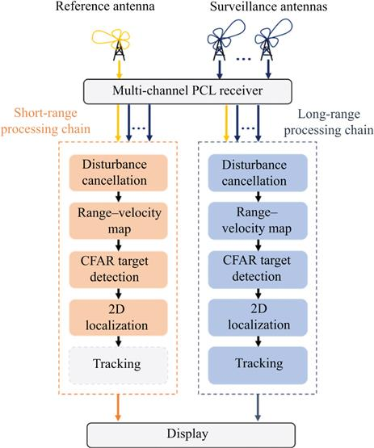
Figure 7.13 DVB-T-based processing scheme for simultaneous detection and localization of drones and aircraft [9]. © 2020 IET
This aspect has been specifically investigated in [9]. As it is apparent from Figure 7.13, the two processing chains are made up of the same blocks. Nevertheless, the algorithm implemented in each block – together with its relevant parameters – must be properly adapted to the considered application. This might also include the timings to be employed (i.e. coherent integration intervals length, update rates and time windows used for cancellation), which can be asynchronously set for the two processing chains to suit the needs of the different tasks.
The disturbance cancellation stage exploited in the DVB-T PR was addressed in Chapter 6 where the ECA-S (ECA-sliding) approach was shown to be a suitable solution for both processing chains. However, based on the considerations in [35], batches of small dimensions should be used against civil air traffic aerial targets to synthesize a wide Doppler cancellation notch to effectively remove the non-stationary disturbance, while longer batches are preferred for the detection of slowly moving objects with low RCS to yield a narrower cancellation notch, thus preserving the target echo contribution. As illustrated in Figure 7.13, once the cancellation stage has been applied, and the reference signals have been properly filtered to remove the high side lobes and spurious peaks appearing in the DVB-T signal ambiguity function (AF) [24], the collected signals undergo the range–velocity map evaluation. For this evaluation, the two different surveillance applications require different CITs
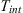
, as well as different algorithms, to be employed. It should also be considered that the limit to the used CIT is also related to the computational complexity required by the processing technique, as well as the maximum admissible latency for the detections that could potentially need to trigger other sensors. Specifically, in the long-range civil air traffic surveillance application case, aiming at increasing the detection capability of low RCS aircraft as well as at widening the coverage area, long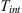
should be considered. In contrast, when short-range surveillance is sought, due to the limited distances and to the low velocity of the targets of interest, shorter CITs could be employed. It is also worth mentioning that in both cases extendedOnce the range–velocity maps have been evaluated at all the available surveillance channels, a CA-CFAR detection stage is separately applied to each map to detect targets with a given probability of false alarm
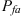
and, subsequently, the target is localized in the X–Y plane by estimating its DoA based on the availability of different surveillance antennas. Finally, a tracking stage is applied to reduce the false tracks. For this, it is likely that different techniques should be employed. A standard, low-cost tracking stage can be used for the civil air traffic. However, an advanced algorithm should be considered to account for the complex and unpredictable motion of drones in the short-range surveillance case.As the first example of the results obtained with the illustrated signal processing stages, Figure 7.14(a) and (b) shows the range–velocity maps obtained for a single data file (scan) from data set 2 described in Section 6.3.2 of Chapter 6 for both the short-range and long-range cases, respectively. Specifically, based on the availability of air truth information (namely GPS or ADSB registrations), we report an enlarged view of the maps around the two targets of interest. All the reported maps have been scaled for the average background level (both clutter residuals and thermal noise) so that each value represents the estimated signal-to-disturbance-plus-noise ratio (SDNR).
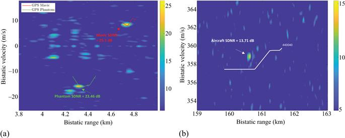
Figure 7.14 Enlarged view of the bistatic range–velocity maps obtained with the processing scheme of Figure 7.13 applied at the same scan against (a) drones at short range and (b) aircraft at long range (ADS-B track in white) [9]. © 2020 IET
In the enlarged view of Figure 7.14(a) we observe that, at the time of the selected scan, two drones are flying in the monitored area with a bistatic range greater than 4 km and opposite bistatic velocities (see the red and green GPS trajectories). Two high peaks with SNR values of 25.1 and 23.46 dB are clearly visible around the Mavic and Phantom GPS tracks, respectively. Simultaneously, a well-focused peak with SNR = 13.71 dB is present at further distance and at very high velocity (enlarged view of Figure 7.14(b)), around the bistatic location [160 km, 359 m/s], which is likely to correspond to the aircraft return (see ADSB track in white). Incidentally, we notice that many other peaks appear in both figures. These are caused by undesired contributions, such as side lobes of the AF, disturbance residuals, as well as other noise sources, or they can correspond to other targets moving in the considered area in the short-range case. The latter issue can become a major problem in applications such as airport surveillance; therefore, the following subsection is devoted to address this problematic issue.
Before concluding this section, a more extensive example is provided in Figure 7.15(a) and (b) that reports the simultaneous short-range and long-range detection results over the bistatic range–velocity plane obtained for the data set 2 used in Chapter 6, Section 6.3.2. Specifically, Figure 7.15(a) reports the same result of Figure 6.11(a) in Chapter 6 where the capability of the DVB-T PR to detect drones up to few kilometres from the receiver is clearly demonstrated. Figure 7.15(b) shows the detection results obtained against the same data set, when the parallel processing scheme used was optimized for wide area surveillance. In each figure, the grey dots represent all the raw detections of the passive sensor across consecutive CIT within the considered acquisition time, the coloured tracks in Figure 7.15(a) are those provided by the GPS receiver on board the cooperative drones, while in Figure 7.15(b) in black we report the available ADSB data for civil air traffic. Eventually, the red plots in Figure 7.15(b) represent the output of the tracking stage. Examining Figure 7.15(b), we notice that the system is able to detect most of the aircraft flying in the surveyed area. Specifically, targets at bistatic ranges up to 150 km are detected with excellent continuity. Notice that the target track 4CA567 is not detected as it falls within the surveillance antenna backlobe. Moreover, many other targets are detected with good continuity at further distances.
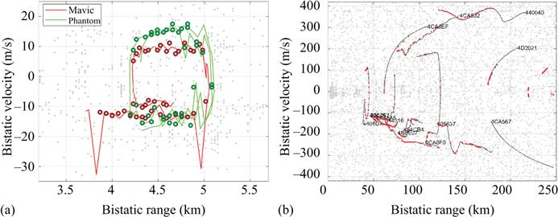
Figure 7.15 Detection results and ground truth tracks for data set 2 at (a) short ranges and (b) long ranges [9]. © 2020 IET
7.4.2 Tackling the different target dynamic issues
As previously mentioned, the capability to detect mini UAVs and drones, which are characterized by very small RCS values, might be strongly limited in high-density target scenarios where different target classes coexist. This is the case of an airport terminal area where targets of different sizes may be present.
In principle, the detection of weak target echoes is not prevented by the presence of thermal noise since long CITs could be exploited to increase the target SNR available in the range–Doppler map. In contrast, the weak drone returns could be masked by stronger targets located in the same range cell or in neighbouring range–velocity cells. Note that the power received from drones can be of several dBs lower than larger targets, such as civil air traffic aircrafts. Therefore, in this subsection, we aim at overcoming this issue by taking the advantage of a CLEAN-like multistage algorithm [36] to remove the strongest target contributions, in addition to the use of long CITs.
Figure 7.16 shows the block diagram of the proposed signal processing method. First, as described in Section 7.4.1, the signals collected with the reference and surveillance antennas undergo disturbance cancellation stage and range–velocity map evaluation. We refer to the latter as
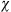
[r,v], with r and v representing the generic bistatic range–velocity bin. Incidentally, we recall that for targets with a dominant radial velocity, the CAF evaluation might also include an RMC stage [32,37].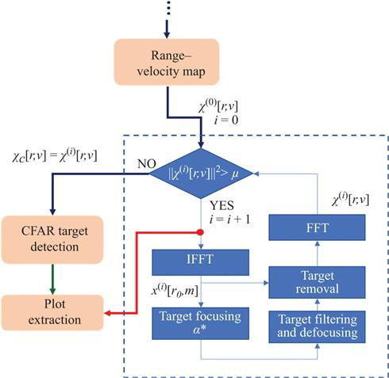
Figure 7.16 Block diagram of the proposed signal processing scheme [10]. © 2020 IEEE. Reprinted, with permission, from Reference [10]
Afterwards, a CLEAN-like algorithm [36] is used with the purpose of estimating the dominant target echoes and progressively removing them from the image so that the weak target returns begin to appear.
At the ith iteration of the proposed algorithm, the following steps are performed:
- At the beginning (i = 0), the range–velocity map
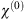
[r,v] undergoes a first thresholding stage that aims at identifying the target echoes that are stronger than a fixed power threshold μ. - Once a strong target echo has been identified at (r0,v0), its range cell, i.e.
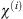
[r0,v], is fed in input to an inverse fast Fourier transform to move from Doppler frequency to the slow-time domain. - The output of this stage undergoes a focusing stage, using the Doppler rate value
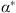
that results in the maximum target peak, as described in [33]. - Then, the target contribution is properly filtered and a reverse focusing is applied to recover the current estimate of the target signal in the range-compressed slow-time domain, x(i)[r,m].
- Finally, the filtered and defocused target contribution is subtracted from the original, and the new cleaned version undergoes an FFT to move from slow-time to Doppler frequency domain.
- The obtained range–velocity map
 [r,v] undergoes the thresholding stage described at point 2.
[r,v] undergoes the thresholding stage described at point 2.
The algorithm should be stopped when the bistatic range–velocity map is likely to contain only weak target echoes, namely when the threshold μ is not exceeded by any range–velocity bin. Note that the threshold value must be properly selected according to the considered surveillance application, namely it will largely depend on the considered target types and on the ranges of interest. We euristically set the threshold to 20 dB above the noise floor in order to guarantee the strongest targets to be easily identified. Once the considered algorithm has been performed, an adaptive target detection stage is applied to the cleaned bistatic range–velocity map
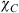
[r,v], according to the approach described earlier. Finally, the remaining target detections will be input to the plot extraction stage, along with the strongest target ones, resulting from stage three of the algorithm.Figure 7.17(a) shows the bistatic range–velocity map obtained at a single data file among the data set 1 described in Chapter 6 with Tint = 1 s. Notice that due to the selected CIT, an RMC stage has been applied, based on the approach described in [32,37]. The map has been scaled for the background level (estimated in a region of the CAF where it is unlikely for targets to be present) in order to measure the target SDNRs. The white line represents the available GPS data for the cooperative drone at the considered time interval. An enlarged view around the drone position is shown in Figure 7.17(b). By observing Figure 7.17(a) and (b), a peak with SDNR = 17.69 dB is visible around the bistatic location [4.81 km, 10 m/s] that is likely to be the return from the drone. Simultaneously, other peaks are visible in Figure 7.17(b), among which the highest one at position [4.88 km, 5.6 m/s] is received with an SDNR = 31.53 dB. In addition, several other peaks are visible in the map which are likely to correspond to other targets moving on the monitored area, e.g. cars, small aircraft, as well as birds. This confirms that airport terminal areas are very likely to show a high-density target scenario and therefore they also show the need for the described advanced strategy to handle this problem.
Figure 7.17 Results obtained against real data with T = 1 s after RMC: (a) bistatic range–velocity map χ(0)[r,v]; (b) enlarged view of (a). © 2020 IEEE. Reprinted, with permission, from Reference [10]
Figure 7.18 shows the result obtained by applying the algorithm shown in Figure 7.16, using a fixed threshold of 20 dB above the noise power in order to remove the strongest target contribution. Specifically, we compare the Doppler frequency cut obtained in the range bin where the strongest peak around the drone was present, namely at 4.88 km, before and after one iteration of the proposed strategy. We notice that a wide notch is obtained after the proposed algorithm (see dashed red curve) and the strongest target is removed. This is also confirmed by observing Figure 7.19(a) and (b), where we see the cleaned version of the range–velocity map and its enlarged view around the drone, respectively, after undergoing a DMC stage.
Figure 7.18 Comparison between χ(0)[r0,v] and  [r0,v] after the first algorithm iteration. © 2020 IEEE. Reprinted, with permission, from Reference [10]
[r0,v] after the first algorithm iteration. © 2020 IEEE. Reprinted, with permission, from Reference [10]
Figure 7.19 Results obtained after the proposed strategy: (a)  [r,v] after DMC; (b) enlarged view of (a). © 2020 IEEE. Reprinted, with permission, from Reference [10]
[r,v] after DMC; (b) enlarged view of (a). © 2020 IEEE. Reprinted, with permission, from Reference [10]
From Figure 7.19, we observe that (i) the drone peak is now very visible and can easily be distinguished from the background, largely due to proper compensation of the target motion, (ii) the strongest target is removed from the map using the proposed algorithm, thus enabling the detection of the weaker drone peak (now at 21.4 dB above the noise floor) that was covered by its side lobes, (iii) finally, by comparing Figure 7.19(a) and Figure 7.17(a), many other strong peaks are removed from the map, which is likely to make weaker peaks appear.
Based on the analysis and discussion reported in this section, we can conclude that DVB-T signals, although mainly used for long-range surveillance, can effectively be exploited to counter the threat of drones especially in surveillance applications of sensitive areas such as airport terminal areas. In fact, the possibility of detecting small targets at several kilometres would allow the potential threat to be identified and started to be tracked before other subsystems, although with less accuracy than that of other waveforms. Subsequently, this useful information could be used as input to subsystems that exploit different signals, more appropriate for the surveillance of these targets at very short range as well as their classification.
7.5 Passive radar based on WiFi
As mentioned in Section 7.2, when considering short range surveillance applications, the WiFi transmissions represent an attractive solution since these are widely accessible sources of opportunity that are able to provide reasonable wide bandwidth (i.e. range resolution) and reasonable high-velocity accuracy (due to high exploited frequencies). While these characteristics are in common with the DVB-S-based sensors, the exploitation of WiFi signals also provides additional advantages for the resulting multiband, multisensory system. Among them, the availability of commercial antenna elements of compact size allows the implementation of low cost receiving arrays to estimate target angle both in azimuth and in elevation. In addition, since many commercial drones emit signals in the WiFi band, they open the way to the joint use of PR and device-based passive location approaches.
7.5.1 WiFi-based PR receiver architecture and processing schemes
In the WiFi case, the source of the signal of opportunity is typically close to the receiver location (order of metres or tenths of metres) so that the direct signal and its multipaths are strong within the signal collected by the surveillance antennas and the corresponding receiving channels. This implies that
- an effective cancellation technique must be applied before building the coherent integrations providing the range–velocity maps to remove both the direct signal and its multipaths/clutter;
there are two different ways to obtain a clean reference waveform [28,29,38]:
- If the WiFi router (transmitter) is accessible and it is possible to introduce a directional coupler between the access point and its antenna, a solution is to connect it to a receiving channel (downconverter and A/D). This is obviously a possibility enabled by the short distance that allows a small but clean fraction of the transmitted waveform to be acquired. It is worth mentioning that while providing quite a good copy of the signal of opportunity, this approach still requires a dedicated receiving channel to be used to collect the reference signal. We explicitly note that in this case, by using a single four-channel receiver (commonly available among COTS SDR), the sensor can feature up to three surveillance channels, including one of the receiving channels dedicated to the reference signal.
- If the WiFi router in not accessible, the reference waveform must be extracted from the signal collected by a receiving antenna. However, in the WiFi geometry the strong level of the direct signal in the samples collected by the surveillance antenna allows the direct extraction of a clean waveform. Specifically, the transmitted signal can be reconstructed by demodulating and re-modulating the received signal according to the IEEE 802.11 standard. This approach may suffer from reconstruction errors but it avoids the need for a dedicated reference channel. In this case using a single four-channel receiver, it is possible to build four parallel surveillance channels. These could be arranged into a double-node system with nodes appropriately displaced to cover a wide desired area but connected to the same SDR and being each node equipped with an interferometric pair of surveillance antennas to enable the estimation of the DoA.
The general processing scheme for WiFi-based PR is shown in Figure 7.20, when multiple surveillance antennas are employed. For illustration purposes, it encompasses both strategies described earlier for the reference signal recovery. When the transmitted waveform is not directly acquired from the transmitter, the reconstruction of the transmitted waveform from the surveillance channels is the first operation. Hence subsequent stages are independent of the reference signal source selection.
Figure 7.20 WiFi-based PR processing scheme
Since the WiFi transmissions are of a pulsed type, the bistatic range–velocity map is evaluated by first cross-correlating the surveillance signals with the available reference signal on a packet-by-packet basis. This stage basically implements a range compression at each signal pulse corresponding to a WiFi packet. Subsequently the obtained results are coherently integrated over a set of consecutive packets. In fact, the range compressed pulses included in the selected CIT undergo an FFT stage in order to obtain the bistatic range–Doppler map. Proper techniques for the range [28] and Doppler [29], side lobes control, are applied since the AF of the WiFi signals is characterized by high side lobes in both range and Doppler dimensions [30].
The processing scheme must typically include the clutter/multipath cancellation stage for the disturbance removal. In particular, the ECA-S has been shown especially effective in the past [35].
After the clutter cancelled, range/velocity maps are evaluated at each surveillance channel, a CFAR threshold is separately applied to them. Finally, a decentralized strategy is exploited to combine the detections of the surveillance antennas belonging to the same receiving node, e.g. target detection is declared only for targets that exceed the threshold at all the surveillance channels. The detection stage also provides a first target localization over the bistatic range–velocity plane. Thereafter, a conventional Kalman tracking algorithm can be applied to reduce the false alarms while yielding more accurate range–velocity measurements. The target localization in local Cartesian coordinates is finally obtained by exploiting the range and DoA measurements provided by multiple surveillance antennas.
7.5.2 Experimental drones detection and 3D localization with WiFi-based PR
Dedicated test campaigns have been conducted to verify the potentials of the considered system to detect and localize a very low RCS drone in 3D. In this experiment, a quad-channel receiver was employed and the reference signal was directly measured from the WiFi AP. Consequently, three surveillance channels were made available that were arranged in a single receiving node, connected to three antenna elements mounted in a triangular shape to allow the 3D localization of the detected target, by exploiting both the filtered bistatic range and the azimuth and elevation angles estimates.
A sketch of the test area together with the WiFi-based PR receiver location is illustrated in Figure 7.21(a). Specifically, the considered area comprised mostly grass surface and was approximately 40-m long and 9-m wide. A very small drone is used as a cooperative target (see Figure 7.21(b)). It is made of carbon fibre and expanded foam and has dimensions 60 cm×60 cm×9 cm.
Figure 7.21 Scenario of the test campaign against drones: (a) sketch of the test area; (b) picture of the used drone [13]. © 2017 IET
In this example, the drone moves from point B (Figure 7.21(a)), at about 30 m from the PR sensor, to point A (towards the receiver location) going up and down, namely changing its height across the acquisition time. The corresponding detection results over the range–velocity plane collected during the whole acquisition time are reported with ‘x’ markers in Figure 7.22(a).
Figure 7.22 Test with a small RCS drone: (a) detection results over the range–velocity plane; (b) 3D localization results [13]. © 2017 IET
As can be seen, a cloud is visible at bistatic ranges between 40 and 55 m. These detections correspond to the target returns since they are clearly compliant with the test geometry. The isolated markers in Figure 7.22(a) are false alarms due to thermal noise and disturbance residuals that can be discarded easily by a tracking algorithm; to this purpose, we used a Kalman tracking filter operating in the range–velocity plane [39]. Specifically, the sequence of red plots represents the range–velocity estimations associated with the moving target. Then, the phase difference among the surveillance antennas at the target detection point is exploited to evaluate the azimuth and elevation angles. For example, in [20] such sources have been considered in PR systems for small airport surveillance. Additionally, the possibility to retrieve the height of the detected targets by exploiting multiple receiving antennas has been investigated [13]. By employing a set of three antennas with both horizontal and vertical displacement, an interferometric approach can be exploited to estimate both the azimuth and the elevation angles of the target echoes. This allows a full localization in three dimensions: height estimation represents strategic information for an effective classification of the different types of targets/threats. Again, we observe that using a standard four-channel receiver provides a 3D node (one extracted reference channel + three surveillance channels) with the case (a) scheme.
The 3D localization results obtained with such a four-channel node are shown in Figure 7.22(b). We show the raw plot positions; therefore, more continuous tracks could be obtained by applying an additional tracking stage in the Cartesian plane to follow the evolution of the x, y, z coordinates.
As can be seen, the obtained results show that the passive sensor is able to correctly detect and localize in 3D the small flying object along its trajectory. The reported experimental results support the practical applicability of the WiFi-based PR concept for such advanced security applications in private premises and/or public areas as a viable alternative to active sensors, at least in the short range.
7.5.3 WiFi joint operation of passive radar and passive source location
While the WiFi-based PR allows effective detection and localization of the drone, a further improved system could be obtained by combining the multisource PR. In addition, we observe that the WiFi ISM frequency band offers also another interesting opportunity. In fact, many drones have an on-board transmitter, operating in this specific frequency range that is used for communications between drone and controller, to download drone’s flight data information, as well as real-time video.
In this case, the WiFi signals allow a target to be localized even through its direct emissions using passive source location (PSL) techniques. The inherent features of the two strategies (PR and PSL) and the results obtained from their comparison on experimental data have shown an interesting complementarity between them. This result opens the way for a joint exploitation of the two localization strategies and to the development of appropriate sensor fusion techniques. For the sake of clarity, we briefly summarize the complementary aspects of PR and PSL in Table 7.3.
Table 7.3 PR and PSL features
| Passive radar (PR) | Passive source location (PSL) |
|---|---|
| Device-free localization | Device-based localization |
| Higher computational cost | Lower computational cost |
| Effective for moving targets | Potentially inaccurate for moving targets |
| No detection of stationary targets | Stationary targets can be detected and localized |
| Closely spaced targets cannot be discriminated | Closely spaced targets can be discriminated due to the device MAC address |
The general processing scheme for WiFi-based PSL is shown in Figure 7.23, where the configuration with four receiving channels is represented (see [14] for details). After the acquisition of the WiFi signals through the available surveillance antennas and the subsequent extraction and identification of the WiFi packets based on their MAC address, the DoA, or equivalently the angle of arrival (AoA), and the TDoA are estimated directly on the received WiFi packets. In particular, the phase difference between the signals collected by two closely spaced antennas is used to estimate the AoA of the target, while the TDoA is obtained by searching the peak of the cross-correlation between the signals received by two distant receiving nodes. As apparent, when using four receiving channels, two AoA measurements and one TDoA could be obtained by properly arranging two receiving nodes each one equipped with two antennas. When three receiving channels are available, the PSL is still able to estimate the target position in the XY plane through the combination of one AoA measurement and one TDoA measurement, provided that two nodes are deployed being just one equipped with a couple of antennas on receive. The combination of the available measurements is geometrically obtained through the intersection of a line (AoA) and a hyperbola (TDoA).
Figure 7.23 PSL processing scheme [14]. © 2020 IEEE. Reprinted, with permission, from Reference [14]
In contrast to the PR, the PSL is a ‘device-based’ localization strategy. It could be potentially inaccurate for moving targets. On the other hand, it is an interesting solution for stationary objects localization, and it allows the unambiguous association of the transmission to a specific target, based on the device MAC address, so that even very closely spaced targets can be discriminated. As illustrated earlier, the PSL estimates the target position directly on the signals transmitted by the drone and received by the surveillance antennas. These signals are therefore characterized by higher SNR conditions, which provide the possibility to reduce the complexity of the processing scheme and, in turn, to decrease the computational cost of the final localization, since it avoids all the steps required by the PR for the extraction of the target echoes, as evident comparing Figure 7.23 with Figure 7.20.
The joint exploitation of PR and PSL processing schemes was tested on experimental data collected in dedicated acquisition campaigns. Details about the considered scenario and the experimental setup are provided in [14]. A commercial drone was used both as target of opportunity for the PR and the PSL systems. Specifically, the DJI Mavic Pro was used. It is a lightweight (about 730 g) drone with small size (about 30 cm×25 cm×8 cm), WiFi 802.11a/b/g/n/ac connectivity, integrated GPS/GLONASS positioning system for flight control and automatic return to take-off position. The streaming video from drone to controller was exploited as device transmissions to perform target detection and localization with the PSL system. Drone localization was performed by means of a proper combination of one range and one AoA measurement for the PR sensor, while the PSL exploits one TDoA and one AoA measurement to reach the same goal. In the first example reported here, the drone moves away from the receiving antennas starting from a distance of about 15 m, then stops and hovers for some seconds at a distance of about 50 m, then it flies back towards the receiving antennas up to a distance of about 30 m.
Figure 7.24 shows the previously mentioned measurements for the experimental test. For each subplot, the ground truth obtained from drone GPS recording is reported in grey. Figure 7.24(a) shows the bistatic range (blue crosses) obtained by the PR sensor after the application of a tracking stage in the range–velocity plane. As can be seen, the PR sensor does not provide a full coverage of the drone flight, specifically in the period of time when the target is in hovering. In Figure 24(b), the TDoA estimated by the PSL sensor is compared with the ground truth. In this case, the obtained measurements do not depend on the motion status of the drone during its flight. Finally, in Figure 24(c) the AoA estimations from the two sensors are compared: as is apparent, the two sensors provide comparable measurements. Moreover, although there is a very small time interval with no detections (after about 15 s), most of the time one sensor compensates for the lack of measurements from the other one.
Figure 7.24 Sensor measurements compared with ground truth: (a) bistatic range, (b) TDoA, (c) AoA. © 2020 IEEE. Reprinted, with permission, from Reference [14]
As can be seen, the complementarity between the two strategies (PR and PSL) is quite evident from this example on experimental data, especially when they operate on a typical move–stop–move target. In particular, the PR provides a good accuracy for moving targets due to the high transmission rate of the AP. In contrast, measurements are absent for static targets. On the other hand, the PSL provides good accuracy localization for both moving and static targets, when the device is active and transmits packets with a high rate. In contrast, PSL measurements can be not enough to track a target if its device does not transmit with regularity. As a consequence, the fusion of PR and PSL measurements is expected to be able to provide significant improvement with respect to the single sensor. The main advantages of the proposed sensor fusion approach are the increase of the positioning accuracy and the decrease of the time where the target is not detected and localized.
Figure 7.25 shows the improvement in localization capability of the sensor fusion technique with respect to the single sensor results, when applying a Kalman filter based on nearly constant velocity model. First of all, the KF is applied to the PR and the PSL sensors, separately. The results are reported in blue for the PR, in red for the PSL and in green for the data fusion techniques in order to investigate the possible improvement coming from the joint exploitation of the two sensors. All the reported curves approximate with reasonable accuracy of the drone’s trajectory in the XY plane. The green curve is on average the closest one to the real path flew by the drone. This can be better observed in Figure 7.26 that shows the instantaneous positioning errors of the three examined approaches (with respect to the ground truth) for the presented experimental test. In particular, the single component errors are reported in Figure 7.26(a) and (b), for the x component and the y component, respectively, while the combination of the two coordinates errors is considered in Figure 7.26(c). In addition to the coverage improvement described before, the results show that when the measurements from both sensors are available, the positioning errors after sensor fusion application are significantly reduced with respect to those obtained with a single sensor.
Figure 7.25 Drone XY-localization after Kalman filter application. © 2020 IEEE. Reprinted, with permission, from Reference [14]
Figure 7.26 Positioning errors after Kalman filter application: (a) x component, (b) y component, (c) overall positioning error. © 2020 IEEE. Reprinted, with permission, from Reference [14]
7.6 Conclusions
In this chapter, the concept of a multiband PR system has been investigated. The multisensory PR architecture has been introduced and appropriate waveforms of opportunity have been selected to provide the system with multitasking capabilities. Specifically, the proposed system exploits DVB-T signals to guarantee the required coverage against drones and UAV, whereas DVB-S and WiFi-based systems offer improved accuracy in terms of target localization and characterization at shorter range. Finally, the WiFi band operation allows to include in the fusion logic also device-based localization techniques based on the radiation spontaneously emitted by commercial drones.
The capabilities of the different subsystems have been demonstrated by means of experimental tests using cooperative targets, which allowed us to verify the benefits conveyed by the selected waveforms of opportunity in the conceived multisensory system. In particular, while the presented analysis and the experimental demonstration confirmed the multiband PR sensor as a way to include the nice features provided by the different available waveforms of opportunity, a perspective improvement is foreseen in the development of the signal processing techniques to fuse the multiple sensors outputs. The basic approach, presented in the earlier discussion, consists in using the DVB-T PR for the drone search function, thus providing the cueing to both WiFi PR and DVB-S PR that operate in parallel to obtain accurate range–velocity bistatic measurements and angle measurements, each one in its own projection geometry. Eventually, the two sensors can be exploited with their high resolution to characterize/classify the target.
Perspective improvements in the fusion technique include algorithms to merge the measurements obtained at different resolutions and accuracies by the three sensors, which also operate intrinsically on different projected bistatic domains on asynchronous signal waveforms, with different update rates. The joint tracking of the drone targets obtained by an optimized fusion of the three-sensor measurements is expected to provide improved accuracy, as well as a significant robustness to (i) availability of the signals of opportunity, (ii) propagation conditions with respect to the individual sensor, (iii) target RCS value for the specific bistatic angle, carrier frequency and polarization, (iv) possible target cancellation by the cancellation filter intended to remove direct signal and interference, when the bistatic geometry shows the absence of relative velocity.
Advanced fusion techniques are also foreseen to be developed for the target characterization and classification, based on the available range and velocity resolution as well as on the polarization. In this line goes also the potential exploitation of the micro-Doppler signatures that might be available especially with the high-frequency DVB-S PR. Also in this case we expect to see significant capability improvements to become available in the future, with the development of appropriate signal processing techniques.
In addition to the foreseen development of the signal processing techniques, joint experimental tests, to be carried out in the near future when the restrictions for the containment of the COVID-19 pandemic will allow, are expected to highlight both the nice features of the multisensory system and the open challenges or needs.
Finally, the near-term evolution of the communication waveforms clearly includes both an improvement in the availability of satellite communication signals, which will include shortly also broadcast directed to handheld/mobile devices and the presence of emerging ubiquitous mobile communication systems with the 5G/6G mobile devices. The former is expected to provide additional satellite signals of opportunity with wider coverage and sensibly higher power densities, allowing to enlarge the surveillance areas of the DVB-S sensor, while keeping its nice features related to the high carrier frequency and to the long CIT available with the stationary emitter. The latter will certainly provide a dense network of emitters of opportunity, operating at different carrier frequencies – up to very high values around 60 GHz in the very short range – with generally variable, but possibly sensibly large frequency bandwidth. Both types of signals of opportunity are high-quality candidates for the inclusion in the multiband PR sensor, or as replacements for the present sensors.
References
[1] De Cubber G., ‘Explosive drones: how to deal with this new threat?’. Proceedings of the 9th International Workshop on Measurement, Prevention, Protection and Management of CBRN Risks; Belgium, Apr 2019, pp. 1–8.
[2] Ritchie M., Fioranelli F., and Borrion H. ‘Micro UAV crime prevention: can we help Princess Leia?’ in Savona, B. L. (ed.). Crime Prevention in the 21st Century. New York, NY: Springer; 2017, pp. 359–376.
[3] Shi X., Yang C., Xie W., Liang C., Shi Z., and Chen J. ‘Anti-drone system with multiple surveillance technologies: architecture, implementation, and challenges’. IEEE Communications Magazine. 2018; vol. 56(4), pp. 68–74.
[4] Liu Y., Wan X., Tang H., Li J., Cheng Y., and Zhang H. ‘Digital television based passive bistatic radar system for drone detection’. Proceedings of the 2017 IEEE Radar Conference; Seattle, WA, USA, May 2017, pp. 1493–1497.
[5] Poullin D. ‘Countering illegal UAV flights: passive DVB radar potentiality’. Proceedings of the 19th International Radar Symposium (IRS); Bonn, Germany, Jun 2018, pp. 1–10.
[6] Jarabo-Amores M. P., Mata-Moya D., Gómez-del-Hoyo P. J., et al. ‘Drone detection feasibility with passive radars’. Proceedings of the 15th European Radar Conf.; Madrid, Spain, Sep 2018, pp. 313–316.
[7] del-Rey-Maestre N., Mata-Moya D., Jarabo-Amores M. P., Gómez-del-Hoyo P. J., and Rosado-Sanz J. ‘Optimum beamforming to improve UAV’s detection using DVB-T passive radars’. Proceedings of the 2019 IEEE International Radar Conference; Toulon, France, Sep 2019, pp. 1–6.
[8] Martelli T., Colone F., and Cardinali R. ‘Simultaneous short and long range surveillance of drones and aircrafts with DVB-T based Passive Radar’. Proceedings of the 2019 IEEE International Radar Conference; Toulon, France, Sep 2019, pp. 1–6.
[9] Martelli T., Colone F., and Cardinali R. ‘DVB-T based Passive Radar for simultaneous counter drone operations and civil air traffic surveillance’. IET Radar, Sonar & Navigation. 2020; vol. 14(4), pp. 505–515.
[10] Martelli T., Filippini F., and Colone F. ‘Tackling the different target dynamics issues in counter drone operations using passive radar’. Proceedings of the 2020 International Radar Conference; Washington, DC, USA, Apr–May 2020, pp. 512–517.
[11] Schupbach C., Patry C., Maasdorp F., Boniger U., and Wellig P. ‘Micro-UAV detection using DAB-based passive radar’. Proceedings of the 2017 IEEE Radar Conference; Seattle, WA, USA, May 2017, pp. 1037–1040.
[12] Knoedler B., Zemmari R., and Koch W. ‘On the detection of small UAV using a GSM passive coherent location system’. Proceedings of the 2016 17th International Radar Symposium (IRS); Krakow, Poland, May 2016, pp. 1–4.
[13] Martelli T., Murgia F., Colone F., Bongioanni C., and Lombardo P. ‘Detection and 3D localization of ultralight aircrafts and drones with a WiFi-based passive radar’. Proceedings of the 2017 International Conference on Radar Systems (Radar 2017); Belfast, UK, Oct 2017, pp. 1–6.
[14] Milani I., Bongioanni C., Colone F., and Lombardo P. ‘Fusing active and passive measurements for drone localization’. Proceedings of the 2020 International Radar Symposium (IRS); Warsaw, Poland, Oct 2020, pp. 245–249.
[15] Ilioudis C. V., Cao J., Theodoru I., et al. ‘GNSS based passive radar for UAV monitoring’. Proceedings of the 2019 IEEE Radar Conference; Boston, MA, USA, Apr 2019, pp. 1–6.
[16] Cabrera O., Bongioanni C., Filippini F., Sarabakha O., Colone F., and Lombardo P. ‘Detecting drones and human beings with DVB-S based COTS passive radar for short-range surveillance’. Proceedings of the 2020 International Radar Conference; Washington, DC, USA, Apr–May 2020, pp. 37–42.
[17] Martelli T., Cabrera O., Colone F., and Lombardo P. ‘Exploitation of long coherent integration times to improve drone detection in DVB-S based passive radar’. Proceedings of the 2020 IEEE Radar Conference (RadarConf20); Florence, Italy, Sep 2020, pp. 1–6.
[18] Filippini F., Cabrera O., Bongioanni C., Colone F., and Lombardo P. ‘DVB-S based passive radar for short range security application’. Presented at 2021 IEEE Radar Conference; Atlanta, GA, USA, 2021.
[19] Howland P. E. ‘Editorial: passive radar systems’. IEE Proceedings on Radar, Sonar and Navigation. 2005; vol. 152(3), pp. 105–106.
[20] Lombardo P. and Colone F. ‘Advanced processing methods for passive bistatic radar’ in Melvin, W. L. and Scheer, J. A. (eds.). Principles of Modern Radar: Advanced Radar Techniques. Raleigh, NC: SciTech Publishing; 2012, pp. 739–821.
[21] Griffiths H. D. and Baker C. J. Introduction to Passive Radar. Norwood, MA: Artech House; 2017.
[22] Pisciottano I., Cristallini D., and Pastina D. ‘Maritime target imaging via simultaneous DVB-T and DVB-S passive ISAR’. IET Radar, Sonar and Navigation. 2019; vol. 13(9), pp. 1479–1487.
[23] Cabrera O., Bongioanni C., Colone F., and Lombardo P. ‘Non-coherent DVB-S passive radar demonstrator’. Proceedings of the 2020 International Radar Symposium (IRS); Warsaw, Poland, Oct 2020, pp. 228–231.
[24] Colone F., Langellotti D., and Lombardo P. ‘DVB-T signal ambiguity function control for passive radars’. IEEE Transactions on Aerospace and Electronic Systems. 2014; vol. 50(1), pp. 329–347.
[25] Kuschel H., Heckenbach J., O’Hagan D., and Ummenhofer M. ‘A hybrid multi-frequency passive radar concept for medium range air surveillance’. Proceedings of the 2011 Microwaves, Radar and Remote Sensing Symposium; Kiev, Ukraine, Oct 2011, pp. 275–279.
[26] Poullin D. and Flecheux M. ‘Passive 3D tracking of low altitude targets using DVB (SFN broadcasters)’. IEEE Aerospace and Electronics Systems Magazine. 2012; vol. 27(11), pp. 36–41.
[27] Martelli T., Colone F., Tilli E., and Di Lallo A. ‘Multi-frequency target detection techniques for DVB-T based passive radar sensors’. Sensors. 2016; vol. 16(10), pp. 1–25.
[28] Colone F., Falcone P., Bongioanni C., and Lombardo P., ‘WiFi-based passive bistatic radar: data processing schemes and experimental results’. IEEE Transactions on Aerospace and Electronic Systems. 2012; vol. 48(2), pp. 1061–1079.
[29] Falcone P., Colone F., and Lombardo P., ‘Potentialities and challenges of WiFi-based passive radar’. IEEE Aerospace and Electronic Systems Magazine. 2012; vol. 27(11), pp. 15–26.
[30] Colone F., Woodbridge K., Guo H., Mason D., and Baker C. J. ‘Ambiguity function analysis of wireless LAN transmissions for passive radar’. IEEE Transactions on Aerospace and Electronic Systems. 2011; vol. 47(1), pp. 240–264.
[31] Colone F., O’Hagan D. W., Lombardo P., and Baker C. J. ‘A multistage processing algorithm for disturbance removal and target detection in passive bistatic radar’. IEEE Transactions on Aerospace and Electronic Systems. 2009; vol. 45(2), pp. 698–722.
[32] Pignol F., Colone F., and Martelli T. ‘Lagrange-polynomial-interpolation-based keystone transform for a passive radar’. IEEE Transactions on Aerospace and Electronic Systems. 2018; vol. 54(3), pp. 1151–1167.
[33] Filippini F., Martelli T., Colone F., and Cardinali R. ‘Exploiting long coherent integration times in DVB-T based passive radar systems’. Proceedings of the 2019 IEEE Radar Conference; Boston, MA, USA, Apr 2019, pp. 1–6.
[34] Cabrera O., Bongioanni C., Colone F., and Lombardo P. ‘Comparing phase-locked and non-phase-locked architectures for dual-channel DVB-S passive radar’. Proceedings of the 2020 17th European Radar Conference (EuRAD); Utrecht, the Netherlands, Jan 2021, pp. 350–353.
[35] Colone F., Palmarini C., Martelli T., and Tilli E. ‘Sliding extensive cancellation algorithm for disturbance removal in passive radar’. IEEE Transactions on Aerospace and Electronic Systems. 2016; vol. 52(3), pp. 1309–1326.
[36] Jenho T. and Steinberg B. D. ‘Reduction of sidelobe and speckle artifacts in microwave imaging: the CLEAN technique’. IEEE Transactions on Antennas and Propagation. 1988; vol. 36(4), pp. 543–556.
[37] Martelli T., Filippini F., Pignol F., Colone F., and Cardinali R. ‘Computationally effective range migration compensation in PCL systems for maritime surveillance’. Proceedings of the 2018 IEEE Radar Conference (RadarConf18); Oklahoma City, OK, USA, Apr 2018, pp. 1406–1411.
[38] Colone F., Martelli T., Bongioanni C., Pastina D., and Lombardo P. ‘WiFi-based PCL for monitoring private airfields’. IEEE Aerospace and Electronic Systems Magazine. 2017; vol. 32(2), pp. 22–29.
[39] Falcone P., Colone F., Macera A., and Lombardo P. ‘Two-dimensional location of moving targets within local areas using WiFi-based multistatic passive radar’. IET Radar, Sonar & Navigation. 2014; vol. 8(2), pp. 123–131.
1Department of Information Engineering, Electronics and Telecommunications (DIET), Sapienza University of Rome, Rome, Italy